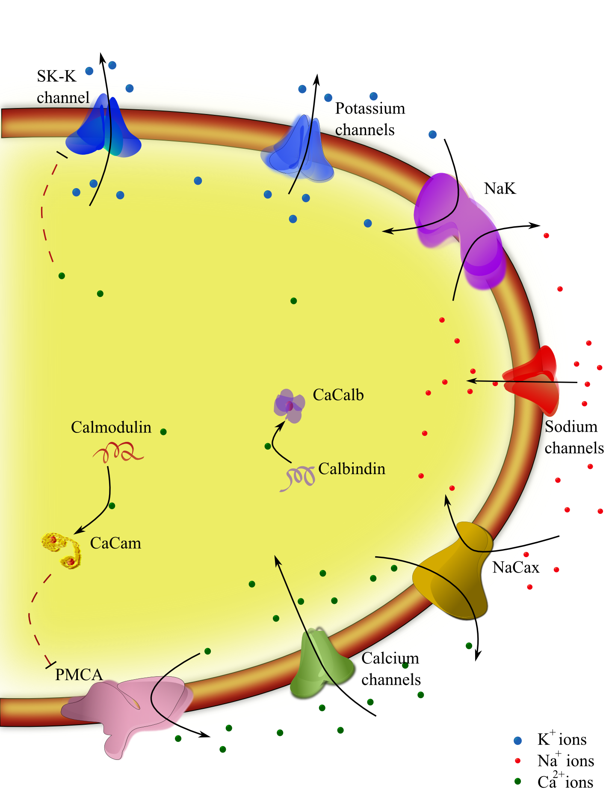

A simple model of pacemaking using ion transport at the neuronal membrane that would help to analyse the implied energy usage is presented. The model has been used to study the association between repetitive firing pattern of Substantia nigra neurons and cytosolic calcium. With the help of detailed mechanism to describe the functioning of pumps and exchangers at the membrane, this model is capable of describing energy expenditure of these neurons due to the activity at its membrane. The model can also be used to simulate the response of these neurons to channel blockers such as TTX and dihydropyridines. The original reference is cited below:
Francis F, Garcia MR, Middleton RH (2012) Energetics of ion transport in dopaminergic substantia nigra neurons. In: Wellstead P, Cloutier M, editors, Systems Biology of Parkinson's Disease, Springer New York. pp. 81-109
|  |
| A schematic diagram of neuronal membrane ion transport described in the model. |